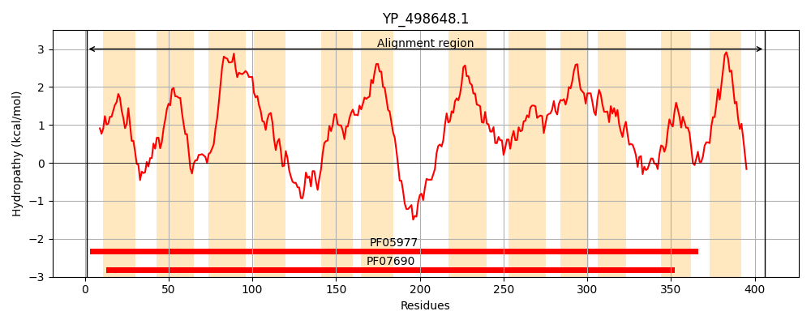
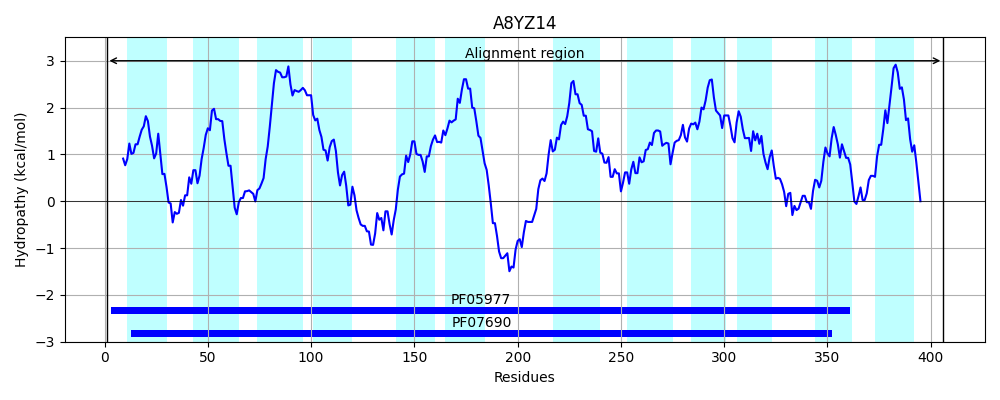
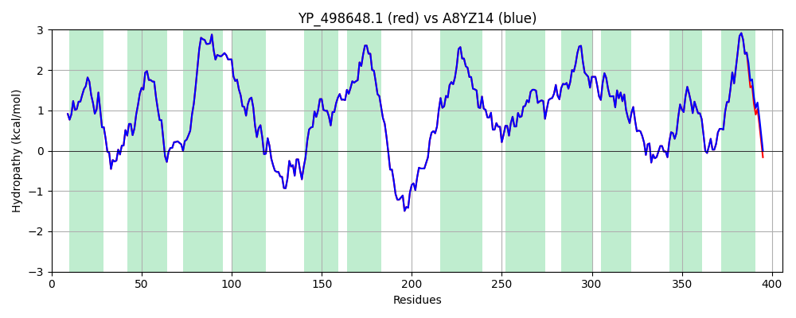

Hit Accession: A8YZ14
Hit TCID: 2.A.1.62.1
Hit Description: gnl|BL_ORD_ID|910 gnl|TC-DB|A8YZ14|2.A.1.62.1 Possible MFS family major facilitator transporter OS=Staphylococcus aureus (strain USA300 / TCH1516) GN=USA300HOU_0099 PE=4 SV=1
Mach Len: 406
e:0.000000
Query TMS Count : 12
Hit TMS Count: 12
TMS-Overlap Score: 12.400000
Predicted Substrates:None
BLAST Alignment:
Score: 2017 , Bit scores: 781 bits, E-value: 0.0e+00, Alignment length: 406, Percentage identity: 100
Query: 1 MTDLLKIKNFRLFFLAEIISAFGVGISTVGANWYLIDKTNDSQLLGIMLALNVLSGFLASPIIGGLADKYNRRNIILITYLLQVILYLLIVIALVMIGFETYLVIGFAIVNGIGWTTYMATSRSLVKQILKPDQYTDANSLLEISLQTGMFIAGGLSGILYKINGFTLIIAMTIMMFLISIFMLFRLHVDKPTHSEEESTNSLLQEYLLGWKFLKDNMMIFIFGVISIIPMVFTMIFNISLPGYVYNVLKLSSVQFGFSDMLYGIGGLCAGLISAILSKKISTKVLIFLLYFILVINSALFIWINSAFYLFIGSFILGYSISSIRIYMNTAIMNTVSDKYVGRSFTIWTSISLLLQSLIAPFLGRWINEINDKFGFYIILILSLLIFVTLLLVNKTDKIKYAHKEE 406
MTDLLKIKNFRLFFLAEIISAFGVGISTVGANWYLIDKTNDSQLLGIMLALNVLSGFLASPIIGGLADKYNRRNIILITYLLQVILYLLIVIALVMIGFETYLVIGFAIVNGIGWTTYMATSRSLVKQILKPDQYTDANSLLEISLQTGMFIAGGLSGILYKINGFTLIIAMTIMMFLISIFMLFRLHVDKPTHSEEESTNSLLQEYLLGWKFLKDNMMIFIFGVISIIPMVFTMIFNISLPGYVYNVLKLSSVQFGFSDMLYGIGGLCAGLISAILSKKISTKVLIFLLYFILVINSALFIWINSAFYLFIGSFILGYSISSIRIYMNTAIMNTVSDKYVGRSFTIWTSISLLLQSLIAPFLGRWINEINDKFGFYIILILSLLIFVTLLLVNKT KIKYAHKEE
Sbjct: 1 MTDLLKIKNFRLFFLAEIISAFGVGISTVGANWYLIDKTNDSQLLGIMLALNVLSGFLASPIIGGLADKYNRRNIILITYLLQVILYLLIVIALVMIGFETYLVIGFAIVNGIGWTTYMATSRSLVKQILKPDQYTDANSLLEISLQTGMFIAGGLSGILYKINGFTLIIAMTIMMFLISIFMLFRLHVDKPTHSEEESTNSLLQEYLLGWKFLKDNMMIFIFGVISIIPMVFTMIFNISLPGYVYNVLKLSSVQFGFSDMLYGIGGLCAGLISAILSKKISTKVLIFLLYFILVINSALFIWINSAFYLFIGSFILGYSISSIRIYMNTAIMNTVSDKYVGRSFTIWTSISLLLQSLIAPFLGRWINEINDKFGFYIILILSLLIFVTLLLVNKTGKIKYAHKEE 406 | Protein Hydropathy Plots: |
|---|
|  |  |
Pairwise Alignment-Hydropathy Plot:
|
|---|
|  |